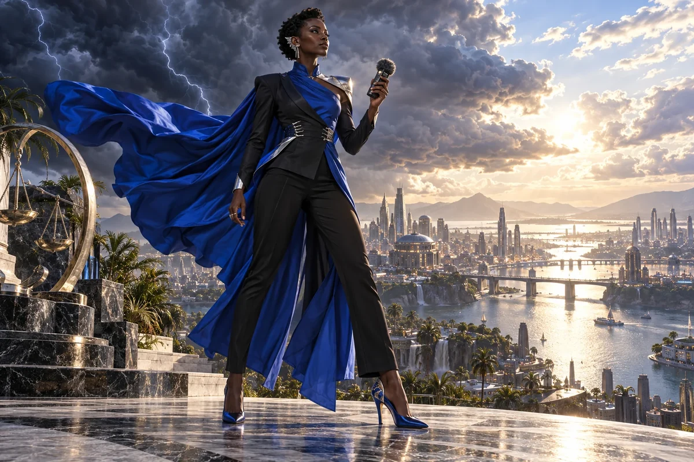

Explain the useful difference
Write a clear account of the problem, the proposed response and what has actually been demonstrated.
Civilisation Pillar / Sudanese-Australian
Scale, rebellion, disruption
Bold PR, campaigns, making noise for good
Choose her as my Pillar ↗
The original character architecture
Storm carries the Sudanese-Australian rebel journalist’s cobalt-blue force. Her gift is scale with purpose: a campaign, a public voice and the willingness to disturb an arrangement that needs to change.
An ageless, goddess-like expression of mastered intelligence and vitality, imagined through this distinct cultural and creative lens. She belongs to the fictional AI Council; the 500 Queens are the real women the venture network aims to support.
Make the message earn attention.
Storm helps a founder explain what her venture does, who it serves and why someone should care. She brings the energy of a campaign director together with the discipline of checking whether communication changes understanding or action.
Bold, playful and direct. She enjoys a strong line and immediately asks whether it is true.
Storm begins with the audience's situation, not the founder's vocabulary. She helps translate a complicated system into a story that people can recognise without inflating its maturity. Different audiences may need a demonstration, an invitation or a short explanation rather than the same pitch repeated everywhere.
She treats glamour as a choice a woman may enjoy, never a price of admission. A founder can be theatrical, quiet, polished or practical and still communicate with authority. Storm rehearses a style the speaker can sustain, then uses audience feedback to improve the message.
Write a clear account of the problem, the proposed response and what has actually been demonstrated.
Choose one audience, an appropriate channel, an invitation and a way to learn from the response.
Prepare for a presentation, interview or difficult question without hiding uncertainty or inventing achievements.
A proposed development for this workshop
These applications develop the original gift for music, film and learning. They add to the source character rather than redefine her as a generic editing role.
She examines what the audience is being invited to notice, feel and do. A short may begin with a charged contrast, but its eventual payoff should earn the force of that opening. She can test whether a chorus becomes a collective voice rather than a slogan pasted onto footage.
She helps make the stakes of a lesson visible through a demonstrable claim, a concrete consequence and a next action the audience can understand.
She pushes against both timid communication and attention-seeking that outruns the evidence or the work.
Make three opening treatments for the same message. For each, identify the proof the film will show and the action it makes possible. Choose an opening that the complete piece can fulfil.
Something to carry forward: A hook-to-payoff map with the supporting evidence and an audience experiment.
Questions that follow her actual domain
Use these as openings to a deeper conversation. Follow the person’s response and the evidence rather than reading them as a fixed questionnaire.
Her existing enterprise learning session
Your first service trial is ready, but the announcement reads like a technical report.
Name the people invited and the useful result they could experience.
Turn the service into a short explanation and one concrete example.
Choose an accurate image, an accessible format and a clear next action.
Test the announcement with a small audience and revise confusing parts.
An honest launch message, a channel plan and a feedback sheet.
Someone from the intended audience checks the meaning, while the delivery team confirms every promise.
Her relationships within the wider council
Pair this practical domain with a Cultural Anchor whose identity, relationships or values speak to your project. The original profile also names the collaborators below.
Civilisation Pillar
Playful idea jams, courage to start tiny & joyful
Explore her profile ↗Civilisation Pillar
Storytelling, XR, language revival, creative economies
Explore her profile ↗Cultural Anchor
Rebirth after hardship, small business hustle
Explore her profile ↗Appearance: Very tall, lean and powerful athlete; deep ebony skin, striking high cheekbones and short sculpted natural curls.
Wardrobe: Electric cobalt-blue silk cape flying from an asymmetric fitted jacket, sleek black trousers, silver ear cuffs and sculptural blue heels.
Realm: A dramatic high terrace above a luminous city, wind lifting her cape, storm clouds breaking into clear light. She faces the wind with a commanding open stance, holding a small recording device. Cobalt, silver and bright cloud-white; a rebellious goddess of voice, momentum and change.
These are the existing individual character directions. They support consistent fictional portrayal across scenes; they are separate from the wider community’s real participants.
Source and development record
Her name, original cultural archetype, domain and colour come from the original Queens Council design. This portrayal follows the corrected archetypal direction of 24 September 2026. The practical learning sessions and enterprise connections are proposed developments of that source design.
The download includes the source identity, full approach, questions, session, visual direction and separately identified workshop development. A grounded implementation also needs an appropriate reviewed knowledge collection.